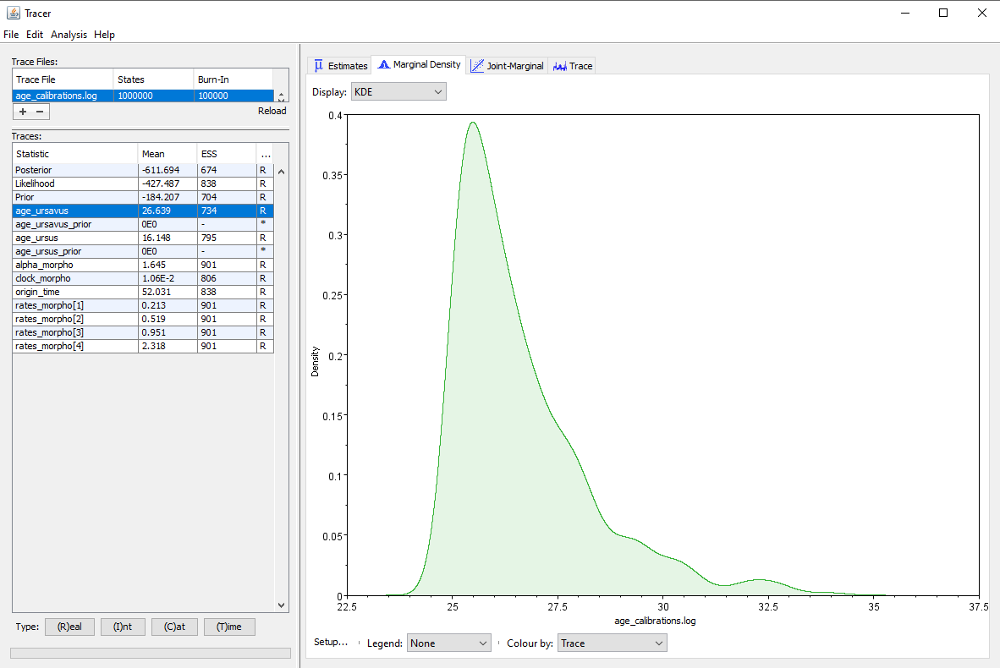
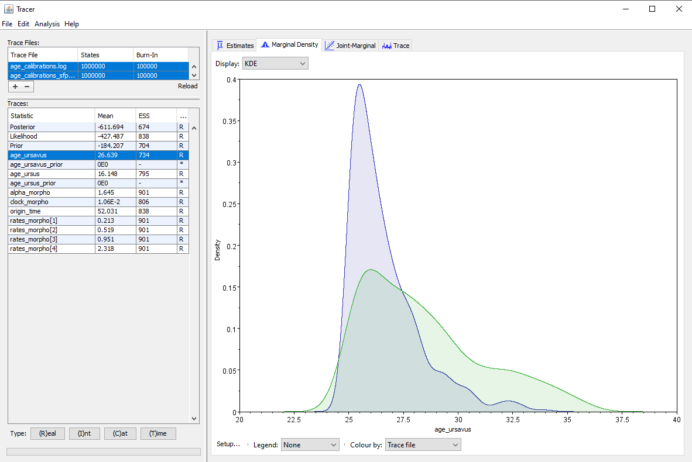
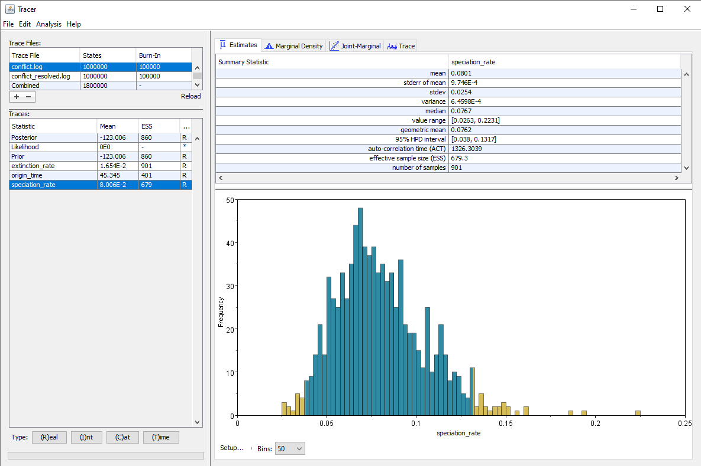

IMPORTANT This tutorial is currently a work in progress, meaning that some sections may be incomplete or lack details. Send feedback by opening an issue on the Github repository.
Overview
Markov Chain Monte Carlo is a common method for approximating the posterior distribution of parameters in a mathematical model. Despite how well-used the method is, many researchers have misunderstandings about how the method works. This leads to difficulties with diagnosing issues with MCMC analyses when they arise. For this lesson, we will not be performing MCMC analyses themselves. However, we will work with MCMC traces, which are logs of the values sampled for each parameter in our phylogenetic model. These are draws from the posterior. We can examine these logs to assess if our analysis has reached convergence, or stationarity.
This tutorial closely follows the text of this paper, which describes strategies for troubleshooting MCMC. We assume that you have completed the introductory MCMC tutorials (Introduction to Markov chain Monte Carlo (MCMC) Sampling), and will not be covering the basic mechanics of the MCMC algorithm. This tutorial, instead, will focus on giving examples of issues that may impact the efficiency and convergence of your MCMC simulation, and will give strategies for solving this problems.
Reading a Trace
Before we can understand if there are problems with our MCMC trace, we need to understand how to examine an MCMC for convergence. In this tutorial, we will mainly focus on fairly simple visual convergence diagnostics. But please note that this tutorial offers some more sophisticated techniques for asessing convergence. For this, we will use the software Tracer.
Start by opening Tracer. You can load in MCMC traces, such as the two provided with this tutorial by clicking the + button (see ). Load in the two traces labeled ‘good’ provided with this tutorial. These are traces that will demonstrate convergence. We estimated these two traces from this tutorial Discrete morphology - Tree Inference. When you load these in, you will see both files, as well as a “combined” trace, showing the total sample contained within both. Note that the combined view will only include analyses that share the same parameters. If you are comparing models or different datasets, they may not combine.

Click on the trace button. This shows the parameter and its values (Y-Axis) and the number of generations (X-axis). If you look at each of these files, you will see that, for each parameter, the lines seem to jump around a central value. This is because this analysis has converged (). It has found stationarity, or the point at which increased sampling no longer affects the distribution of values estimated. If you select both traces, you will see that the two traces have both found stationarity at similar values.
On the left hand side of the screen, we see a set of parameters along with their effective sample size (ESS). The ESS is the most commonly used convergence diagnostic in phylogenetics. The ESS is specific to a posterior sample and to a given parameter, and describes the number of uncorrelated (independent) samples that would be needed to approximate the posterior distribution of a parameter with similar precision to that posterior sample. It is usually defined as ESS $= N/\tau$, in which $N$ is the number of generations and $\tau$ is the autocorrelation time. Due to autocorrelation, the ESS is typically smaller than the number of steps in the MCMC chain, because the difference between two successive samples is usually quite small. If we were drawing completely independent samples, the difference between sample $i$ and sample $i+1$ could be quite large (i.e., an independent sample could be drawn from anywhere in parameter space, so a series of such samples may explore the different areas of that space more quickly than when done step by step by an MCMC chain). We can see that each of our ESS values is over 200, which is generally considered good.

For comparison, let’s look at some poor traces. First, let’s look at the traces labeled too_few (). These traces, as the name may imply have simply not bee run long enough. This trace was estimated from the same tutorial scripts and data as the first trace, however, we ran it for 1/10th the number of MCMC generations. Load in both of the traces. You will immediately notice that all the ESSes are in red, indicating this analysis has not made a sufficient number of draws to approximate the posterior distriuction. If you look at the trace, you will see that it is sampling around a central value, but not densely sampling around it. There is no clear directionality to the trace. This indicates that stationarity has been found, but more sampling needs to occur to confirm this. More generations of MCMC analysis is the solution to this problem.
In the next trace, we have used the same scripts, but are performing MCMC moves less frequently. Load in the two traces labeled few_moves. If you need a reminder on MCMC moves, please see this tutorial. This means that we are sampling fewer new values for important parameters. In this case, we are undersampling the alpha parameter the gamma distribution on Among-Character Rate Variation (ACRV). What you will observe is that in these traces is that the alpha parameter is poorly-sampled. The ESS is very low. ACRV is used to esitmate the rates_morpho parameters - these, correspondingly, have low ESS, as well. When we examine the trace, it is blocky-looking (). This is sometimes called a “skyline” or “Manhattan” shape. This is caused by the parameter being unmoved for several generations, as it is being moved too infrequently. The solution here is to increase the frequency of the move.

The final issue that we are going to diagnose is unreasonable starting values. This issue can be diagnosed by observing that the trace does not stabilize. Load in the files titled poor_start (). What you will observe, again, is that the values for the alpha parameter of ACRV has a very low ESS. What is different, however, is that the trace shows a steep climb from the starting value and does not reach stationarity. In this case, one would want to examine their starting values and priors on their parameters.
Now that we have some simple looks at what these issues look like, we will now dive deeper into the causes of these problems and how they can be fixed.
Selecting priors
This part of the tutorial deals with the choice of prior distributions for continuous parameters. Note that demographic models (birth-death and coalescent models) are also technically prior distributions for the phylogeny itself, however they will be covered in a separate section.
Available distributions
The range of available distributions for priors is quite large, but we present here the most common examples. When deciding on a prior, the choice of the distribution will change the distribution of the probabilities within the range of plausible values, and determine whether we believe the true parameter value to be towards the lower end, the upper end, or anywhere in the range. The distribution chosen also determines whether the parameter value has a strict bound, i.e. a minimum or maximum that it cannot go beyond. Distributions with a so-called “long tail” allow parameter values to go increasingly high, but with increasingly low probability. The second factor in choosing a prior is the range of plausible values determined by the distribution, which will depend not only on the distribution chosen but also on the parameters chosen for the distribution. For distributions which have no hard bounds, we generally consider that the values between the 2.5% and 97.5% quantiles are “plausible” under the distribution. Values outside of this range generally have a very low prior probability.
- Uniform distribution: a distribution which assigns an identical probability to all values between a lower and upper bound. This distribution is parametrized by the lower and upper values of the range. Itis appropriate for parameters with a (known) fixed range, but where the distribution of values within a range is not well known, for instance a sampling probability or an age range for a sample.
unif ~ dnUnif(lower = 37.0, upper = 55.0) - Exponential distribution: a distribution on positive values which has high probabilities for values close to 0, with a long tail. This distribution is parametrized by the rate $\lambda$ of the distribution, where the mean is $1/\lambda$. It is appropriate for values which are always positive but can be very low, such as the diversification rate.
exp ~ dnExponential(lambda = 10) - LogNormal distribution: a distribution on positive values where the majority of the weight is on values within a certain range, defined by the mean and standard deviation parameters. Both values close to 0 and high values have a low probability under this distribution. This distribution also has a long tail, but unlike the exponential distribution, it seeks to impose a minimum on the range of plausible values. It can thus be a better choice for parameters which are unlikely to be very close to 0, such as the clock rate.
lnorm ~ dnLognormal(mean = 0.0, sd = 0.5) - Gamma distribution: similar to the lognormal distribution, the majority of the weight is on positive values within a certain range, away from 0 or from high values. It can thus be applied to the same type of parameters. This distribution is parametrized by the shape and the rate. The mean of the distribution is given by $mean = shape / rate$ and the variance by $var = shape / rate^2$.
gamma ~ dnGamma(shape = 2.0, rate = 4.0) - Beta distribution: this distribution is restricted to values between 0 and 1, but can have a wide range of shapes depending on the parameters set. For instance, a beta distribution can put higher probability on lower values, higher values, or values in the middle of the range. So it is a good choice for parameters which are probabilities and for which we have some knowledge about the distribution, for instance a sampling probability that we know is likely between $0.001$ and $0.01$.
beta ~ dnBeta(alpha = 1.0, beta = 0.8)
Commonly used distributions in phylogenetics are generally restricted to positive values, as this corresponds to most biological parameters. However, there are also distributions available for parameters which can take negative values, such as the normal or uniform distributions.
Finally, more complex distributions such as mixture distributions are available for parameters with a more complicated behaviour. A common situation is a scenario where a parameter can be either a fixed value (usually 0) or estimated under a distribution. For instance, imagine we are trying to detect whether a mass extinction happened in our particular dataset. We know that a mass extinction happened at a specific time, but we are not sure whether it actually impacted our focal clade. In this case we may set the extinction probability during the time of the supposed mass extinction to be either 0 (corresponding to no mass extinction in this clade) or Uniform[0.7, 0.95] (if a mass extinction did happen).
me ~ dnReversibleJumpMixture(0, dnUnif(0.7, 0.95), 0.5)
Evaluating the influence of the prior
We can evaluate the influence of the prior on estimates by running the same analysis under several different prior distributions. We have set up a toy analysis containing a phylogeny inferred from a morphological matrix under an FBD prior. We estimating the phylogeny, origin time and the parameters of the clock and substitution models. The full details of the inference can be found in the prior_influence.Rev file.
We will try several distributions for the clock rate prior:
- a uniform distribution
clock_morpho ~ dnUnif(0.0, 2.0) - an exponential distribution
clock_morpho ~ dnExponential(1.0) - a lognormal distribution
clock_morpho ~ dnLognormal(-0.18, 0.6)
Note that we have chosen distributions which all have the same mean $m = 1.0$, this is important to make sure that the differences we observe come from the shape of the prior distribution rather than simply from the fact that we set a different expectation for the value of the parameter. However, because of the differences in shape, the actual range of plausible values can be very different between distributions. We can check the actual ranges by using RevBayes to check the quantiles of each distribution.
qUniform(p = 0.025, 0.0, 2.0)
qUniform(p = 0.975, 0.0, 2.0)
qexponential(p = 0.975, 1.0)
qlognormal(p = 0.025, -0.18, 0.6)
qlognormal(p = 0.975, -0.18, 0.6)
Note that because of its shape, the exponential distribution does not really have a minimum for its plausible range, as values very close to 0 still have a high prior probability under this distribution. This gives us ranges of [0.05 ; 1.95] for the uniform distribution, [0.0 ; 3.69] for the exponential distribution, and [0.26 ; 2.71] for the lognormal distribution.
Running the inference under these different prior distributions gives us the posterior distribution of the clock rate shown in . We can see that the estimated value changes depending on the choice of prior, as the median estimate is $0.45$ for the lognormal prior, $0.019$ for the uniform prior and $0.017$ for the exponential prior. In a Bayesian analysis, the final estimate is influenced both by the prior distribution, and by the signal provided by the data and the other priors (in particular the prior on origin time in this case). This explains why the estimate under the lognormal prior is so different: the data drives the estimate towards low values, but this prior has a much higher bound for plausible values than the other two distributions. On the other hand, the uniform and exponential distributions mostly differ by their shape in the upper part of the value range, which is not where our posterior is located, and so we do not see large differences between these two priors.
Finally, we observe that changes in the prior distribution can have effects not only on the parameter which is directly impacted, but also on other correlated parameters. For instance, the prior on the clock rate also has an effect on the estimate for the $\alpha$ parameter which controls among-site rate heterogeneity, as shown in .
Note that in this example, we subsampled our original alignment to artificially obtain a matrix with very few characters, which increases the influence of the prior. In a real analysis, it is unlikely that we would use an alignment with so few sites. However, this scenario can also happen for instance due to partitioning: when an alignment is split into several partitions, the amount of information present in the alignment can be split very unevenly, such that some partitions contain almost no signal. If separate substitution and clock models are used for each partition, the estimates for the parameters corresponding to the low-information partition will be heavily influenced by the prior chosen.
Common prior issues
Vague priors
Using very wide or very vague priors can appear tempting, for several reasons. First, sometimes only little information, or contradictory information, is available about the value of certain parameters. Second, setting vague priors lets us avoid some of the work needed to establish more narrow priors, e.g. checking the literature for previous estimates, or thinking deeply about the biological meaning of the parameters. Finally, vague priors provide little information to the inference, and so the final estimates will better reflect the signal coming from the data as opposed to the expectations we have placed on the results.
However, this assumes that there is in fact signal in the data for the specified parameter, which may not always be the case. Some parameters can be difficult to estimate without proper priors, particularly when all samples come from the same point in time: for instance the ages of the phylogeny, the overall substitution rate, or the extinction or death rate. Even when there is enough information in the data to obtain precise estimates from the inference, setting vague priors will slow down the convergence of the chain, as the inference is provided with a much wider range of plausible values to explore.
We can demonstrate this using our toy example from the previous section. The full details of the inference can be found in the wide_priors.Rev file. We will try two different distributions for the clock rate prior:
- an exponential distribution with mean = 1 (i.e. rate = 1)
clock_morpho ~ dnExponential(1.0) - an exponential distribution with mean = 100 (i.e. rate = 0.01)
clock_morpho ~ dnExponential(0.01)
This time both distributions have the same shape, but one is much wider than the other, which we can easily check by looking again at the quantiles of the two distributions.
qexponential(p = 0.975, 1.0)
qexponential(p = 0.975, 0.01)
This gives us a range of plausible values of [0.0 ; 3.69] for the narrow prior, and [0.0 ; 368.9] for the wide prior.
Running the inference under both priors gives the results shown in . The median estimate for the clock rate is $0.018$ for the narrow prior and $0.02$ for the wide prior, so we see that setting a vague prior only had a small impact on the median estimate. However, the 95% HPD interval is much larger when we set a wide prior, which is expected since we provide less information to the inference, and so there is more uncertainty in the results. But another important thing to note is that the effective sample size (ESS) on the clock rate is almost twice as high when using a narrow prior (ESS = 834) as opposed to a wide prior (ESS = 477). The other parameters of the inference are also affected, and most show lower ESS values when using the wide prior. Thus we can see that using vague priors has a negative impact on the speed of convergence of the inference.
Interacting priors
One challenge is specifying priors is that we usually expect that the prior used by the analysis will be the same as the prior that we have set. This is generally the case, unless the same component or parameter is influenced by several different priors. A common scenario where this can happen is in the case of node ages. Node ages have an implicit prior set on them by the prior used for the phylogeny itself. When using a demographic model such as a coalescent or birth-death process, node ages which are coherent with this model will have a higher probability. Similarly if a prior on branch lengths is used, then this will also impact plausible values for the node ages. But node ages can also have explicit priors set on them, for instance through the use of node calibrations defined directly by the user. Even nodes that are not calibrated will be influenced by the calibrations, since a node has to have a lower age than its ancestors and a higher age than its descendants. Thus the prior on a node age is potentially the result of the interaction of many different components.
This interaction needs to be taken into account in order to correctly interpret the results of the analysis, as we will see in the following example. We use the same toy analysis from the previous examples, but this time we use a longer alignment and add node calibrations to our inference. The full details of the setup can be found in the age_calibrations.Rev script. We have defined a set of clades for our phylogeny:
clade_ursus = clade("Ursus_arctos","Ursus_maritimus","Ursus_americanus","Ursus_thibetanus")
clade_ursavus = clade("Ursavus_brevirhinus", "Ursavus_primaevus")
fbd_tree ~ dnConstrainedTopology(fbd_dist, constraints=v(clade_ursus, clade_ursavus))
Each of these clades has an associated prior distribution on the age of their most recent common ancestor (MRCA):
age_ursus := tmrca(fbd_tree, clade_ursus)
age_ursus_prior ~ dnUnif(age_ursus - 28.5, age_ursus - 15.0)
age_ursus_prior.setValue(0)
age_ursavus := tmrca(fbd_tree, clade_ursavus)
age_ursavus_prior ~ dnUnif(age_ursavus - 36.0, age_ursavus - 25.0)
age_ursavus_prior.setValue(0)
We also have a prior set on the origin time of the tree:
origin_time ~ dnUnif(37.0, 55.0)
When we run the analysis, we obtain the posterior distribution shown in for the Ursavus clade that we have set. The first impression we might get from this result is that our inference strongly supports younger ages for this clade, because our original prior was a uniform distribution on the full range [25.0 ; 36.0] My, whereas the posterior has much higher densities for values in the first half of the range. However, this is not taking into account the interactions between priors, which may lead to an effective prior on the clade age which is not uniform at all.

We can check the effective priors for any inference by running the analysis under the prior, i.e. without taking the contributions of the data into account. There are two ways to achieve this:
- we can use the
.ignoreAllData()method on the model object to mark clamped nodes as ignored. CAREFUL: this will ignore all clamped nodes, including the node calibrations if they use clamping. If you want to retain clamped fossil calibrations, you can use the more selective method.ignoreData(...)to ignore some data but retain fossil calibration data.
mymodel = model(variable)
mymodel.ignoreAllData()
- we can simply comment out all the components of the likelihood, which in the case of our analysis is only the
dnPhyloCTMCcomponent.
Then we can compare the posterior distribution obtained from the complete inference to the effective prior obtained from the inference under the prior, shown in . Here we see that the effective prior for the age of the Ursavus clade is not uniform at all, but in fact also supports heavily the younger ages within the specified range. Indeed, the median of the posterior is $\approx 26.1$My, while the median of the effective prior is $\approx 27.8$My, so they are very close to each other. We can also see that the posterior distribution is different from the effective prior and shows support for a more narrow range of age values, so the data is also contributing to our posterior estimates. However, the support of the data for younger ages is much weaker than our initial impression, because the posterior is largely informed by our choice of priors.

Overall, this example illustrates why it is crucial to check the effective priors in case of unexpected interactions. Comparing the complete run and the run under the prior also allows us to evaluate how much support for our estimates is found in the data as opposed to our chosen prior, which will inform our interpretation of the results.
Misspecified or conflicting priors
In this section we see an example of what can happen when priors are misspecified, i.e. when they conflict with either the data or the other priors. We have set up a toy analysis containing a phylogeny under an FBD prior, and estimating the origin time, speciation and extinction rates. The full details of the setup can be found in the prior_conflict.Rev file, but we will focus on the priors used.
The prior for the origin time is:
origin_time ~ dnUnif(37.0, 55.0)
The prior for the speciation rate is:
speciation_rate ~ dnLognormal(2.0, 1.0)
And finally the prior for the extinction rate is:
extinction_rate ~ dnExponential(100)
One issue with lognormal distributions is that it can be difficult to see from the parameter values alone what is the range of plausible values covered by the prior. As we have seen before, we can easily check the quantiles of the distribution using RevBayes:
qLognormal(p = 0.025, 2.0, 1.0)
qLognormal(p = 0.975, 2.0, 1.0)
We see here that the prior expects the speciation rate to be in the interval of values [1.04 ; 52.5] events/My. However, our dataset contains only 18 species, we have set our origin time to be in the interval [37 ; 55]My and the mean of our prior on the extinction rate is set to $1/rate = 0.01$ events/My. Considering the other components of our analysis, the expectation on our speciation rate is thus unrealistically high.
This is likely to affect our analysis in two important ways. First, the influence of the prior will orient the estimates of the speciation rate towards values which are higher than the values supported by the data, and this influence will need to be taken into account when interpreting the results. Second, because the prior on speciation rates is in conflict with the data and other components of the analysis, it is likely to make the likelihood surface more complex, and thus slow down the convergence.
A more reasonable prior on speciation rate would expect lower values, for instance we can set:
speciation_rate ~ dnLognormal(-3.0, 1.0)
This distribution defines a range of plausible values in the interval [0.027 ; 0.35] events/My.
The results using our original, very high prior versus the more reasonable alternative are shown in .

We can see that as expected, the estimated speciation rate is almost twice as high when using our higher prior. But we also see that the ESS for several parameters, particularly the origin time and the speciation rate, are higher when using the alternative prior, even though we ran our chain for the exact same number of generations in both cases. Thus convergence is achieved faster when using a prior which does not conflict with the data and/or the other components of the analysis.
Moves/Operators
In order for the MCMC to work properly, every parameter that is supposed to be optimized (i.e., for which we are searching for the best estimate) has to be associated with a move or operator. The type of move and its settings determine how the parameter can be changed between MCMC steps, how much it can be changed by, and how often a change is attempted. If the move(s) for a parameter is missing, that parameter cannot be optimized, which will usually cause issues for the MCMC. To set up the code in a way to avoid missing operators is to specify them right after the priors for a parameter is set:
moves = VectorMoves()
All move functions in RevBayes start with the prefix mv.
The exact arguments differ from move to move, but generally it includes three things:
The name of the parameter the move should act on (x in the example of the sliding move), one or more arguments needed as settings for the move algorithm (e.g., the sliding window’s size parameter delta), and the move’s weight, which determines how often this move will be attempted on average during each MCMC step.
?mvSlide
On top of these, moves can have the arguments tune (and tuneTarget).
The former is a boolean (i.e., TRUE/FALSE) which defines whether the setting-parameters of the move (e.g., window size delta here) is allowed to be optimized during auto-tuning.
We will revisit the tuning options further below.
The whole set of moves in an analysis are collected in a moves vector (which can be defined upfront and be added to using .append()), so we can look at this vector before running to ensure it contains all the moves we want.
moves
Weights
As mentioned, the weight of a move determines how often that move is attempted, meaning that parameters with higher weights are updated more often, which can be helpful for parameters that are harder to optimize or for which a larger parameter space needs to be covered to find the optima. For simpler parameters, lower weights are sufficient, to not make the MCMC inefficient by enforcing unnecessary move-attempts. Note that in RevBayes, where multiple moves can be performed between each iteration of the chain, the weight implies the average number of move attempts per iteration. In other implementations (e.g., MrBayes, BEAST2), where only one parameter changes per iteration, the weights imply the probabilty for this parameter to be chosen.
Reconsidering weights may be a good idea if some parameters struggle more to converge than others (as can be gleaned from the ESS and traces). The weights of slower converging parameters can be increased to speed up the search for more optimal values, and those of more easily converging parameters may even be reduced to not slow down the overall convergence speed of the analysis.
Example code to come soon...
Step Sizes
When a proposal is made to move a parameter to a new value, this proposal dose not only depend on the nature of the move (e.g., slide, scale, …) but also the current settings of how far from the current value the new proposed one can be.
This is called the step-size of the move, and is usually determined by some parameters of the move function (e.g., the window size delta of the slide move).
Depending on the structure of the likelihood surface (and thus the moved parameter, the data, etc.), the appropriate step size can vary.
If the step size is too small, this can mean the chain is only approaching the optimum value very slowly, thus making the analysis inefficient.
If the step size is too large, its sampling may be too coarse to properly explore the likelihood, and/or it may overshoot the optimal values.
Example code to come soon...
Multiple Operators vs. Autotuning
The efficiency of moves is often measured in acceptance proportion – how many times when a move was proposed during the MCMC has it actually been accepted? When a move is only accepted very rarely, this may imply that it is not exploring the space in a sensible way (e.g., perhaps the step size is too large), and since the parameter is only updated rarely, it does not contribute much to the analysis. On the contrary, if a move is accepted too often, this could be because the step size is too small, and is slowly moving towards some local optimum.
There are two commonly approached strategies for ensuring appropriate step sizes: using multiple moves or using autotuning. For ultiple moves, each parameter is assigned multiple moves of the same kind, covering a range of possible moving parameters. The desired effect of this is, that moves at different step sizes are available to the model, so that there is a good chance that an appropriate one can be suggested and accepted in different situations throughout the chain.
Example code to come soon...
Importanlty, the parameters of these moves should not be tuned during burn-in, since that would change their spacing (and likely equalize them).
The other option is to make use of the auto-tuning feature.
When the argument tune for a move is set to TRUE, the move’s parameters can be tuned automatically, either during the burn-in phase, the main run, or both.
In this case, the acceptance ratio of the move is evaluated over a certain iterations-interval, and the move parameters are adjusted accordingly based on this past performance.
For both .burnin() and .run(), the parameter tuningInterval determines after how many generations the parameters are tuned.
While tuning the moves during burn-in is a good idea, we would advise caution for tuning during the main run, as it can lead to unintended behaviour.
Accordingly, there is not default interval for .burnin(), but the default for .run() is 0.
What is to be considered a ‘good’ acceptance ration can depend on the moves and the case, but common recommendations for desirable acceptance proportions range from around 0.2 to 0.4 – the default in RevBayes is 0.44.
That value can be changed for each move individually using the argument tuneTarget.
Example code to come soon...
Diagnostics
As suggested above, acceptance proportion is a common way to assess whether the MCMC is well tuned.
In RevBayes, this can be checked by applying .operatorSummary() to the mcmc object once it is run.
mcmc.operatorSummary()
To be continued…
Starting Values
The MCMC chain has to have a starting point from which to begin proposing new parameter values. Thus, it is ‘initialized’ with some random values (usually drawn from the priors). This makes sense, because the MCMC should be able to find the optimal parameter values from any starting point, and one would want to avoid introducing bias via the starting position (e.g. starting on top of a local optimum).
However, in practice it is possible to start the chain at a ‘bad’ position, which will impact the analysis negatively. In the easiest cases, this can mean that we start at a point in parameter space that is very far away from the area where the optimum lies. This can result in the analysis runtime to be unnecessarily long (and tuning during those stretches of the chain can mis-tune the moves for when they enter the parameter space near the optima). In the trickier cases, this can mean that our starting point is at a combination of parameter values that are implausible or even conflicting, which makes it hard to calculate a likelihood, or may even crash the analysis altogether.
When an analysis is likely to crash upon starting or to take a long time to get going, strategically setting some starting values to reasonable positions may be a simple way to fix it.
In RevBayes, starting values can be set for any parameter after their prior distribution is specified, using the function .setValue().
moves = VectorMoves()
More example code to come soon...
It may not be immediately clear what a ‘reasonable’ starting value for a parameter should be, and in more complex analyses it may be challenging to find out which of the many moving parts of the analysis are in conflict with one another. But revisiting what the parameters stand for, and how they relate to one another – perhaps by visualizing the chosen prior distributions and the model’s DAG – is usually a good way of getting a better sense for what might be a good way forward. A few strategies have become common:
- Set the starting values to the mean value of the prior (assuming the prior is appropriate)
- Set diversification rates to what would be expected given the number of species and age of the clade, e.g., using the Kendall-Moran estimate for the speciation rate ($\lambda = ln(nTips/2) / rootAge$), and setting extinction to be an order of magnitude lower than that ($\mu = \lambda/10$).
- Consider coordinating the starting values of parameters that are known to be dependent on each other, e.g., rates of evolution and branch lengths.
- Instead of starting with a random topology, supply a starting tree that is reasonably closer to the expected result, by using the output of a faster method (e.g., maximum likelihood or neighbour-joining) or a hand-curated topology. But importantly, make sure the starting tree does not violate any of the additional settings, e.g., calibrated nodes have to be within the age-range they are being calbrated to, and taxa that are constrained to be monophyletic have to form clades in the starting tree too.
But remember that we are not trying to come up with spot-on estimates for each parameter, just a value that seems reasonable enough for our data that it provides a good starting point. The primary goal is to avoid early crashes due to computational issues and auto-tuning issues, and to help speed up the analysis.
In order to still try and avoid bias, it may be prudent to run several runs with different starting values (in the same logic as it is done with random starting points), and check whether they converge on the same values.
Inference algorithm
An MCMC can get stuck on a local optimum, and if that happens for long enough, it could give the impression of converge, because the sampled parameter values would seem to have stabilised. There can be various causes for this to happen, but it seems particularly common when the likelihood surface is complex and many parameters are correlated. A way how this can manifest is the presence of ‘plateaus’ in the trace – parameters being stuck around the same value for a long time and then suddenly jumping to other values further away.
Independent Runs
A simple way to notice problems with local optima is to run several independent chains. If the resulting MCMC samples are different, this would indicate that the runs got stuck on different local optima.
Example code to come soon...
Note that the independent chains should be initialised at different (if possible random) starting values, to make it more likely that they would end up on different local optima.
MCMCMC
A more elaborate way of running the analysis on a complex likelihood surface is to use Metropolis-coupled MCMC (MCMCMC or MC$^3$). Instead of several independent (but with regards to their setup equivalent) chains, we make use of so-called ‘heated’ chains.
For these additional chains, the posterior probability is raised to a power, which flattens the likelihood surface and thus lets them move faster and easier across it. This means they can explore areas in parameter space that the regular chain might not have gotten to.
However, only the likelihood and parameter values of the regular chain are being recorded, but in certain intervals, its current likelihood is compared with that of the current position of the heated chains. If their likelihood is higher, the regular chain can switch places with them and continue sampling in that region of parameter space.
Example code to come soon...
This way, the heated chains can ‘scout’ the parameter space for different optima, while the regular chain can ‘jump’ to the highest optima that were found, instead of getting stuck at whichever it landed on first.
Models
If there are still convergence problems after the inference setup, priors, and starting values have been checked, we have to consider whether the model is appropriate for our data. There are steps to ensure this that can be taken during setup already, but also tests and modifications that can be used afterwards, as detailed below.
Helpful Tools
It can seem hard at first to decide on appropriate models or model components, especially if it seems unclear what to base such decisions on. Luckily there exist a number of tools that can be used to make more informed decisions.
- jModelTest: Standalone software that tests for best-fitting nucleotide substitution models (GitHub).
- PartitionFinder: Standalone software that tests for best-fitting partitioning schemes and molecular evolution models (Website).
- ClockstaR: R package that tests for appropriate relaxed clocks for molecular data (GitHub).
- EvoPhylo: R package that tests for partitioning schemes for clock models for morphological data (CRAN).
- PBDB tools: Lists various resources to help with assembling and processing fossil data, calculating diversification and sampling parameters, and other useful functions.
Separating Joint Inferences
When running inferences of different parameters jointly, e.g., when using different data types in the same analysis, or inferring topologies jointly with node ages, convergence issues can arise if those different inference parts are supporting different solutions. For example, if molecular and morphological data suggests different tree topologies. If the supported topologies differe too much, the joint model will be torn between them, being unable to converge (as each data source lowers the likelihood of the result the other one supports and vice versa). Similar issues can be cuased if e.g., different partitions strongly support different topologies.
Example code to come soon...
Model Assumptions and Adequacy
Besides aforementioned conflicts, the model may also be much more fundamentally unsuitable for the data. It mighth thus be necessary to revisit the assumptions of the model and check whether the data meets those assumptions. Are sample sizes sufficient? Is variation distributed as expected? Are numbers of trait states/nucleotides severely skewed?
Especially for models with many parts, the assumptions and their interactiosn can be difficult to judge. In such a case (but also in general), an option is to use model adequacy tests, which were specifically designed to find data-model-mismatches. Many use posterior predictive simulations (PPS), an approach which simulates data under the model (using the parameters inferred from the data) to simulate new datasets. The characteristics of these are then compared to those of the initial data, and if they differ significantly, that implies that the model is inadequate to describe the data.
The concept of that approach is rather straightforward, and any model or analysis combining multiple models can be tested this way, as long as both inference and simulation are possible with the same model. However, the main difficulties lie in having sets of summary statistics which capture the relevant characteristics in which the model and the data need to match, and to interpret what particular data-model-mismatches the discrepant summary statistics translate into. Also, it should be noted that this approach can only be used if an MCMC chain can be run (to have a posterior to sample from to simulate new data sets), and not if it fails to run to begin with.
PPS approaches have been developed for various kinds of phylogenetic models already, many of which could be used in RevBayes. The tutorial Introduction to Posterior Prediction demonstrates the concept and neccessary Rev code in more detail, while three associated tutorials exemplify the use of posterior prediction to test tree inference models using the P$^3$ approach.
Reducing Complexity
At last, we might have to consider reducing the complexity of our model. While modern approaches allow us to incorporate all kinds of processes and interactions, and to consider all kinds of patterns, such complex models will only work well if the data contains enough signal to inform this complexity. Similar to any statistical test requiring sufficient sample size to produce meaningful results, these models require certain structure and heterogeneity in the data to be able to infer parameters without too much uncertainty.
For example, if we use a relaxed clock model (allowing for different rates of evolution along different branches) but only have one fossil node calibration or not much sequence variation, the MCMC may struggle to find much support for a particular configuration of branch rates. Since there is no information in the data to back up higher or lower rates in different parts of the tree the MCMC will find roughly similar support for many rate combinations, leading to estimates with large uncertainty - and in the process will take a long time to converge too. If we simplify the model by using a strict clock, we may instead converge on overall sensible rates within a reasonable time, despite missing out on some rate heterogeneity.
Similarly, if we divide our sequence data into many partitions despite noth much evidence for different rate dynamics, we are thereby decreasing the sample size within each partition, perhaps making it harder to get confident rate inferences from each one than if we had concatenated some of the partitons instead.
Our inferences can only provide answers as detailed and nuanced as our data can inform, meaning we have to adjust our modelling ambitions accordingly (or fill any gaps in our data).
Data Quality Issues
While increasing the amount of data you use to generate a phylogenetic tree is generally a good thing, it can also make convergence more difficult. Increasing the amount of data increases the computational cost of estimating a phylogenetic tree, and therefore, can negatively impact inference performance. This is especially true in situations where the data are highly uncertain, have lots of missing data, or are in conflict with other sources of data. Below, we will examine a few common sources of MCMC difficulties that relate to data quality issues.
Conflict
Conflict occurs when multiple sources of data disagree with one another about the topology, branch lengths or other parameters. Examples of this can include if two genes favor different topologies, or if morphological data and molecular data favor different trees. It is advisable to run different data sources independently to assess if this issue is at play in your dataset.
Sparsity
In general, assembling more data leads to more precise and more accurate inferences. Previous research has shown that total-evidence studies require $\sim$300 morphological characters to obtain reliable estimates of tree topology and divergence times in extinct clades (missing reference).
However, it is important to note that additional data is not necessarily better for the convergence of an MCMC inference. Adding more data comes with added computational costs, and thus can have a net-negative impact on the performance, especially if the added data is very uncertain or conflicts with the rest of the data or with the chosen models and priors. For instance, (missing reference) built phylogenies using either a complete alignment of nuclear markers, a supersparse matrix of $\sim$300 genes with large amounts of missing data, or the combination of both. They found that trees obtained using the combined dataset did not significantly differ from the trees obtained using the complete alignment alone. One possible avenue for resolving convergence issues is thus to remove genes or partitions which contain low amounts of information. Software such as genesortR can be used to choose subsets of genetic datasets that provide solid phylogenetic information, thus elimiinating the need to have complete datasets.
Similarly, while increasing taxon sampling has been shown to be important for phylogenetic accuracy (missing reference), increasing the number of extant or fossil samples in the tree leads to an exponential increase in the number of possible topologies. This increases compute time and decreases efficiency. For size-related convergence issues, one may choose a subset of their taxa to include. Many methods assume assume extant taxa are sampled uniformly at random; but in many cases, they are sampled sparsely by keeping only one living representative per genus or subclade. The diversified sampling scheme has been implemented in the FBD model (Zhang et al. 2016) to accommodate such a case.
- Zhang C., Stadler T., Klopfstein S., Heath T.A., Ronquist F. 2016. Total-Evidence Dating under the Fossilized Birth-Death Process. Systematic Biology. 65:228–249. 10.1093/sysbio/syv080